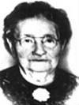

fiche familiale
| |
Venance Piquet
Piquette Parrain de Philibert Rivet. Père: Jean-Baptiste Piquette Piquet Mère: Esther Dugas Mariage le 2 octobre 1849 à St-Jacques-de-l'Achigan, cté Montcalm. Épouse: Marie-Louise Lafond Personne Naissance à St-Alphonse-de-Rodriguez, cté Joliette. Marraine de Philibert Rivet. Père: Charles Lafond Personne Mère: Louise Bélisle Germain |
Enfant 1 Louis-Cyprien Piquette
décède à l'âge de 4 ans.
Naissance le 16 septembre 1852
à St-Alphonse-de-Rodriguez, cté Joliette.
Baptême le 16 septembre 1852 à St-Alphonse-de-Rodriguez.
Parrain Louis Piquet, marraine Héloïse Personne.
Décès le 29 novembre 1856 à St-Alphonse-de-Rodriguez, cté Joliette.
Sépulture le 1 décembre 1856 à St-Alphonse-de-Rodriguez.
-------------------------------------------------------------------------------
Enfant 2 Virgine Piquette
Naissance le 6 mai 1854
à St-Alphonse-de-Rodriguez, cté Joliette.
Baptême le 6 mai 1854 à St-Alphonse-de-Rodriguez.
Parrain Edouard Chevalier, marraine Mathilde Goulet.
-------------------------------------------------------------------------------
Enfant 3 Émélienne Piquette
Naissance le 28 mars 1856
à St-Alphonse-de-Rodriguez, cté Joliette.
Baptême le 29 mars 1856 à St-Alphonse-de-Rodriguez.
Parrain Joseph Mélançon, marraine Adéline Houle.
-------------------------------------------------------------------------------
Enfant 4 Louis Piquette
décède à l'âge de 92 ans.
Naissance le 28 avril 1858
à St-Alphonse-de-Rodriguez, cté Joliette.
Baptême le 29 avril 1858 à St-Alphonse-de-Rodriguez.
Parrain Gilbert Rivet, marraine Marguerite Rivet.
Décès le 8 juillet 1950 au USA.
Parrain d'Agnès Piquette sa soeur.
Conjointe: Clara ??
-------------------------------------------------------------------------------
Enfant 5 Joseph-Alcide Piquette
Naissance le 10 février 1860
à St-Jacques-de-l'Achigan, cté Montcalm.
Baptême le 11 février 1860 à St-Jacques-de-l'Achigan
Parrain Jean-Baptiste Piquette, marraine Esther Dugas.
-------------------------------------------------------------------------------
Enfant 6 Joseph Piquette
Naissance le 13 juin 1862
à St-Jacques-de-l'Achigan, cté Montcalm.
Baptême le 15 juin 1862 à St-Jacques-de-l'Achigan
Parrain Jean-Baptiste Desrosiers, marraine Éloïse Personne dit Lafond.
Parrain de Marie-Anne Rivet.
Mariage le 1er septembre 1891 à St-Liguori, cté Montcalm
Conjointe: Marie Gagnon
-------------------------------------------------------------------------------
Enfant 7 Eugénie Piquette
Mariage le 23 août 1875
à St-Jacques-de-l'Achigan, cté Montcalm
Conjoint: Israël Thérien
-------------------------------------------------------------------------------
Enfant 8 Émile Piquette
Naissance le 6 juillet 1866
à St-Jacques-de-l'Achigan, cté Montcalm.
Baptême le 6 juillet 1866 à St-Jacques-de-l'Achigan
Parrain Dosithé Lemire, marraine Sophranie Piquette.
Mariage le 5 juin 1891 à St-Alphonse-de-Rodriguez, cté Joliette.
Conjointe: Caroline Beaupré
-------------------------------------------------------------------------------
|  |
Enfant 9 Agnès Piquette Piquet décède à l'âge de 94 ans. Naissance le 25 avril 1868 à St-Jacques-de-l'Achigan, cté Montcalm. Décès le 1 mai 1962 à Laverlochère, cté Témiscamingue. (ses ancêtres) Mariage le 18 juillet 1887 à St-Jacques-de-l'Achigan, cté Montcalm. Conjoint: Urgel Rivet Rivest n. 20 avril 1863 d. 9 juin 1939. (sa famille) |
Enfant 10 Léontine Piquette
Naissance le 26 mai 1870 à St-Jacques-de-l'Achigan, cté Montcalm.
Baptême le 26 mai 1870 St-Jacques-de-l'Achigan
Parrain Olivier Jetté, marraine Julie Piquette.
Marraine de Éléontine Rivet.
Mariage le 12 janvier 1892 à St-Jacques-de-l'Achigan, cté Montcalm.
Conjoint: Damasse Parent
-------------------------------------------------------------------------------
Enfant 11 Lumina Piquette
Marraine de Donatien Rivet (Rivest).
Mariage le 8 août 1887 à St-Jacques-de-l'Achigan, cté Montcalm.
Conjoint: Elzéar Parent
-------------------------------------------------------------------------------
Enfant 12 Lucie Piquette
Mariage le 3 octobre 1871
à St-Jacques-de-l'Achigan, cté Montcalm.
Conjoint: Denis Leblanc
-------------------------------------------------------------------------------